James Foadi(a) and Pierre Aller(b)
(a) Imperial College London (j.foadi@imperial.ac.uk) , Diamond Light Source Ltd (james.foadi@diamond.ac.uk)
(b) Diamond Light Source Ltd (pierre.aller@diamond.ac.uk
Main aim of this tutorials is to get users acquainted with the program BLEND (Foadi et al, 2013) and to show how it can be used effectively to obtain complete data sets out of several partial or complete ones. The reader interested in exploring pros and cons of using data from multiple crystals can refer, for instance, to Liu et al. (2011), Giordano et al. (2012), Axford et al. (2012), Hanson et al. (2012).
For convenience both tutorials can be carried out inside a same directory and specific results can be collected in separate sub-directories. We will assume that "blend_tutorial" is the name of the overall directory and that it has been created in the $HOME area. Different directory names and locations can be used, but appropriate modifications will have to be applied to the paths displayed in this document. Data downloaded using the above links, when unpacked, yield a directory named "data". For the rest of the tutorials this directory can be moved inside "blend_tutorial". There are three groups of data in the sub-directory “data”. One group is formed by crystals of insulin, the second by crystals of lysozyme and the third still by lysozyme soaked with bromine.
The first tutorial will be illustrated with and without use of the CCP4 interface. Other tutorials will be illustrated either with or without interface, but the user should have no problem re-running them as it suits her / him best.
Easy tutorial to get you started with BLEND
a) Using CCP4I
The CCP4 interface associates a project directory to an already-existing physical directory in your computer file system. Thus we need to create a directory before anything else. Let's call this directory “insulin” (it is assumed you are in the blend_tutorials directory):
mkdir insulin
Next we need to associate a project directory called “BLEND_TUTORIAL_INSULIN” to the insulin directory just created. You can do this using “Directories & ProjectDir” in ccp4i. Now that the project directory has been created let us change to the “BLEND_TUTORIAL_INSULIN” one using “Change Project” in ccp4i. Everything is now ready to start practising with BLEND.
Insulin data have been collected at the Diamond Light Source synchrotron and integrated using MOSFLM. Angular rotation range varies from data set to data set, as these have been collected from different crystals. Please, explore some of these integrated data clicking “View Any File” in ccp4i and selecting the “mtz MTZ” field in “File type”.
In the CCP4 GUI, BLEND can be found either in the “Data Reduction and Analysis” or the “Program List” section on the left. When started, BLEND section looks like the following:
To begin with we run BLEND in analysis mode, with the main goal of creating clusters of data that can, potentially, merge well together. After having filled the blank fields with the appropriate paths and keywords, the above interface should resemble this:
All keywords with their meaning are explained in BLEND documentation. After the run in analysis mode, we can look at the output using ccp4i “View Files from Job → View Job Results (new style)”:
Cell sides, cell angles, cell volume and mosaicity can be viewed for all the 14 data sets included in this insulin tutorial. Numerical values can be explored within the same view. More files have been produced by this run of BLEND in analysis mode. These are listed by selecting “View Files from Job” → “blend_1”:
In fact “blend_1” is a directory under the “insulin” directory, containing all files produced by this run of BLEND. The most important among these files is possibly the dendrogram (file “tree.ps” and file “tree.png”). Both the PNG and PS files display the same dendrogram. They can be viewed using any graphical tool, but, at present, only the PS file can be visualised using the CCP4 GUI:
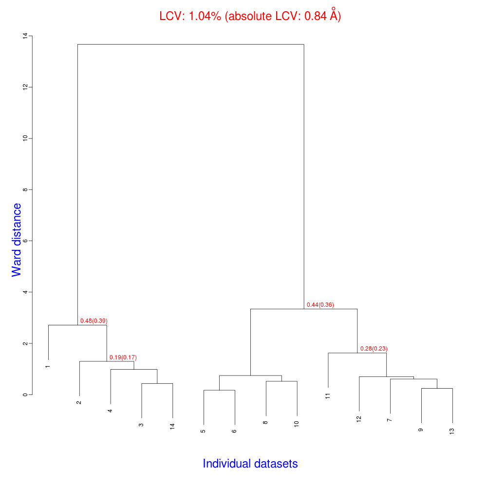
The numbers in red are the Linear Cell Variation (LCV) values (and the associated absolute LCV in Å) for the top five clusters. They give an indication of cell similarity among all crystals included in the specific cluster; thus, ultimately, they can be associated with isomorphism between different data sets. In the above dendrogram we can see two clusters with similar cell variability (0.44% and 0.48%, corresponding to 0.36 Å and 0.39 Å respectively).The variability is more than doubled when these clusters merge into the overall cluster containing all 14 data sets; this is probably an indication of some minor form of non-isomorphism. Tests done so far with BLEND show that some structural dissimilarities can be noticed for values of LCV higher than 1 – 1.5%.
LCV values for all clusters are reported in the file “CLUSTERS.txt”:
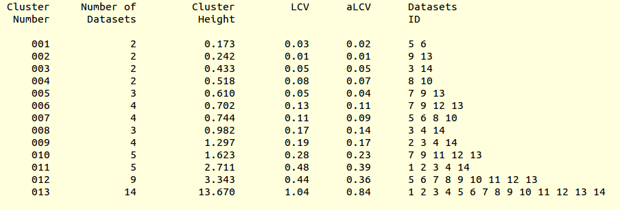
This is, essentially, a numerical version of the dendrogram and, as we will see, is often useful to run BLEND in synthesis mode. Another useful file in directory “blend_1” is “BLEND_SUMMARY.txt”, which is essentially a table reporting cell parameters and other quantities for each data set. The unique serial number assigned by BLEND to each data set can be found in the “FINAL_list_of_files.dat” file. For us this file looks like the following:
The first column contains full path to all input data files; the second contains the serial number assigned to input files; the fourth and fifth column list initial and final image numbers, while the third lists the last image BLEND will include for all subsequent scaling and merging jobs. Numbers in these column have been calculated through the procedure to get rid of radiation damaged images. In the specific case the only data set where images will be discarded is data set 9, for which BLEND suggests to remove from image 108 to image 122. The last column include resolution cuts suggested by BLEND for all subsequent scaling and merging jobs. These are worked out using intensity averages decay with resolution, and are controlled by keyword ISIGI.
All input data files were assigned a serial number; this is not always the case, because sometimes individual data sets are excluded as they contain multiple wedges or other irregular features, and BLEND does not accept them in the group to be further analysed. There might also be reasons for which the user does not want to consider some of the files included in the data directory (for example if they belong to an unwanted experiment). In this case the user can make use of the file “mtz_names.dat”, also included in directory “blend_1”, to re-run BLEND using less input data. File “mtz_names.dat” looks like the following:
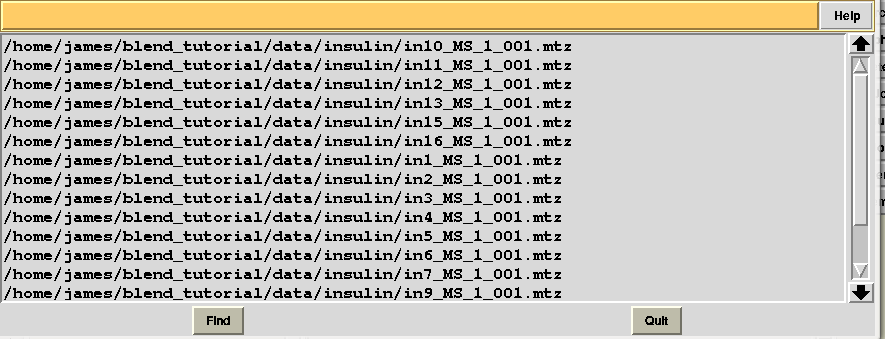
In order to use it, suppose we are not any longer interested in the last 4 files. We first copy “mtz_names.dat” into a file called “original.dat”, in a newly-created directory called “amended_insulin”:
mkdir amended_insulin
cp insulin/blend_1/mtz_names.dat amended_insulin/original.dat
At this point the last 4 files can be deleted from “original.dat” file which, now, looks like the following:
Next, we associate this directory to a new project directory in ccp4i, called “BLEND_TURORIAL_AMENDED_INSULIN”, and select this project directory. BLEND can now be executed again in analysis mode, this time selecting the “original.dat” file as starting point, rather than the whole directory containing all 14 insulin data sets:
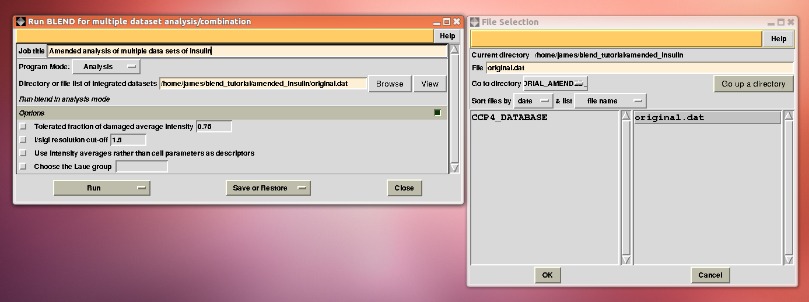
The usual files will be produced (still in directory “blend_1”, but inside directory “amended_insulin”), although this time BLEND will have dealt with 10, rather than 14 data sets, and the dendrogram will look different from the one previously obtained:
As numbering of the 10 data sets has not been modified, one can see that clusters for these data include the same elements of corresponding clusters in the previous example, with the exclusion of data sets numbered 11 to 14.
Having shown how BLEND in analysis mode can be re-executed using a subset of data, let us go back to the previous working directory by selecting “BLEND_TUTORIAL_INSULIN” project directory in ccp4i. Let's try and increase or decrease image cutting due to radiation damage, by using the RADFRAC keyword. An input value of 0.85 means that we would like to keep only images for which intensities have, on average, been dampened by less than 15% of their initial value. Input for RADFRAC can be included via ccp4i as shown here:
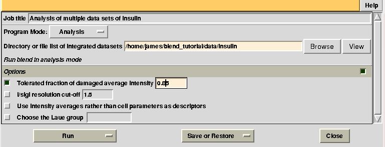
This time “FINAL_list_of_files.dat” shows some difference in the number of images discarded. For data set 9 discarded images range 102 to 122, while before it ranged 108 to 122, and images 93 to 100 are now discarded from data set 7, while no images had bee discarded in the previous case:
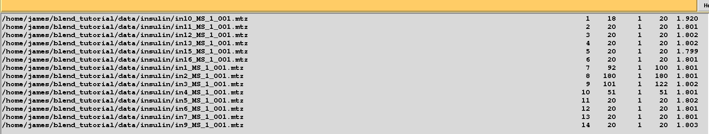
Let's modify RADFRAC once more and use 0.65, rather than 0.85. As a result:
Images discarded are now less because we have allowed for intensities to be dampened, on average, by up to 35% of their starting value. A similar data exclusion can be applied in resolution terms, by changing value to the keyword ISIGI. For instance, let's re-run BLEND in analysis mode (with RADFRAC 0.75 - default value), fixing ISIGI to 3:
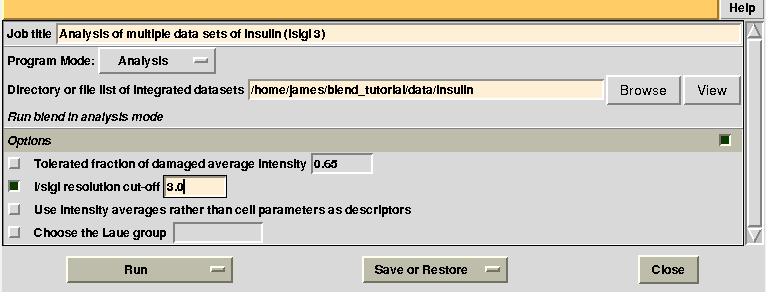
Results should be produced in directory “blend_4”. The “FINAL_list_of_files.dat” looks as follows:
Resolution cutoffs have now changed. For the first data set the highest is 2.304, while previously it was 1.920. We expect an increase if the value of ISIGI is lowered. This is normally the case. But in the specific insulin example data are exceptionally good, and their signal-to-noise ratio is quite high to the very highest resolution. Thus, results will not change here if values lower than 1.5 are used for ISIGI.
Let's pay a closer look at the results of cluster analysis, as described in file “CLUSTERS.txt”:
Cluster numbers and corresponding data sets are listed in column 1 and column 6 respectively. The second column reports how many data sets form the specific cluster, while in column 3 it is found the exact height at which data sets merge to form the cluster. Columns 4 and 5 lists all LCV and aLCV values. The dendrogram encourages people to look for grouping of individual data sets. Larger groups attract one's attention more than smaller groups. In this sense the presence of two clusters, cluster (1 2 4 3 14) and cluster (5 6 8 10 11 12 7 9 13), is immediately perceived. Very soon, though, we realise that the second cluster is made up of two smaller clusters, cluster (5 6 8 10) and cluster (11 12 7 9 13). Finer details and even smaller clusters can be singled out by proceeding to the lower part of the dendrogram. This way of proceeding through the dendrogram interpretation can have some validity, but is highly subjective. In BLEND it is found that a more logical, straightforward and objective way of interpreting the dendrogram is to assume that each node can represent a valid data set. Subsequent operations of space group assignment (POINTLESS) and scaling (AIMLESS) determine the degree of validity. This interpretation is accomplished with BLEND synthesis execution mode. From “CLUSTERS.txt” we read that everything merges at height 13.670. If the user wishes to produce results for all nodes under a certain height, it will suffice to specify this in the GUI. For instance, to produce results for all nodes in the insulin example, the BLEND section of the GUI will look like this:
After execution, several files will be produced in directory “blend_5” (this is the fifth job for the GUI under project directory “BLEND_TUTORIAL_INSULIN”), including another directory packed with files, called “merged_files”:
In this directory one can find unscaled (produced by POINTLESS) and scaled (produced by AIMLESS) files corresponding to all nodes selected in the dendrogram. Final overall merging statistics can be found in the “MERGING_STATISTICS.info” file:
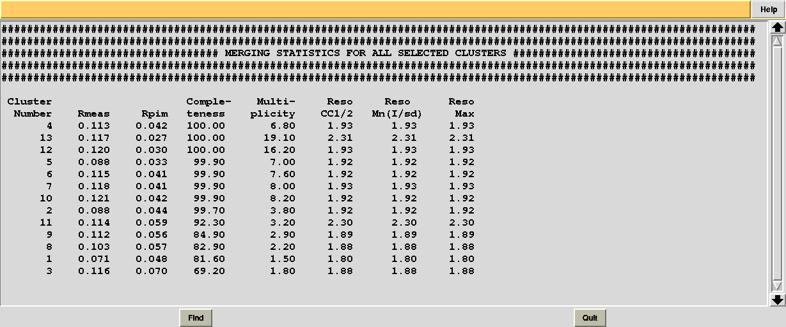
Values are sorted on increasing completeness, followed by lower Rmeas. Higher completeness is often associated with high redundancy (multiplicity), but also with poor isomorphism, because many more data sets are needed for both completeness and multiplicity to increase. For example, cluster 12 is 100% complete, as it is cluster 4, but this last cluster has lower Rmeas, quite certainly because it is the union of just two data sets, while cluster 12 includes nine data sets. A good result is represented by cluster 2, which has Rmeas = 0.088 and it is 99.7% complete. Cluster 5 is an even better choice; it has same Rmeas than cluster 2, but a much lower Rpim. It is a nearly complete set and has high multiplicity. This is what it should probably be used. A visual version of the above table is provided by the “Rmeas_vs_Cmpl.png” or “Rmeas_vs_Cmpl.ps” plot:
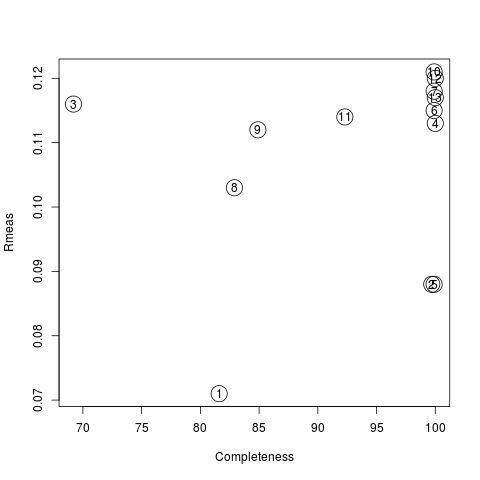
From the overall view provided by this plot we can see that 2 and 5 are the best data sets in terms of statistics and completeness (they are barely visible because they overlap on top of each other). Unscaled and scaled files related to all results, in the “merged_files” directory, can be inspected with the usual CCP4 tools (try, for instance, to view “scaled_005.mtz”). POINTLESS and AIMLESS logs for all unscaled and scaled files are also included in this directory. For instance, the final part of the AIMLESS log file for cluster 5 shows:
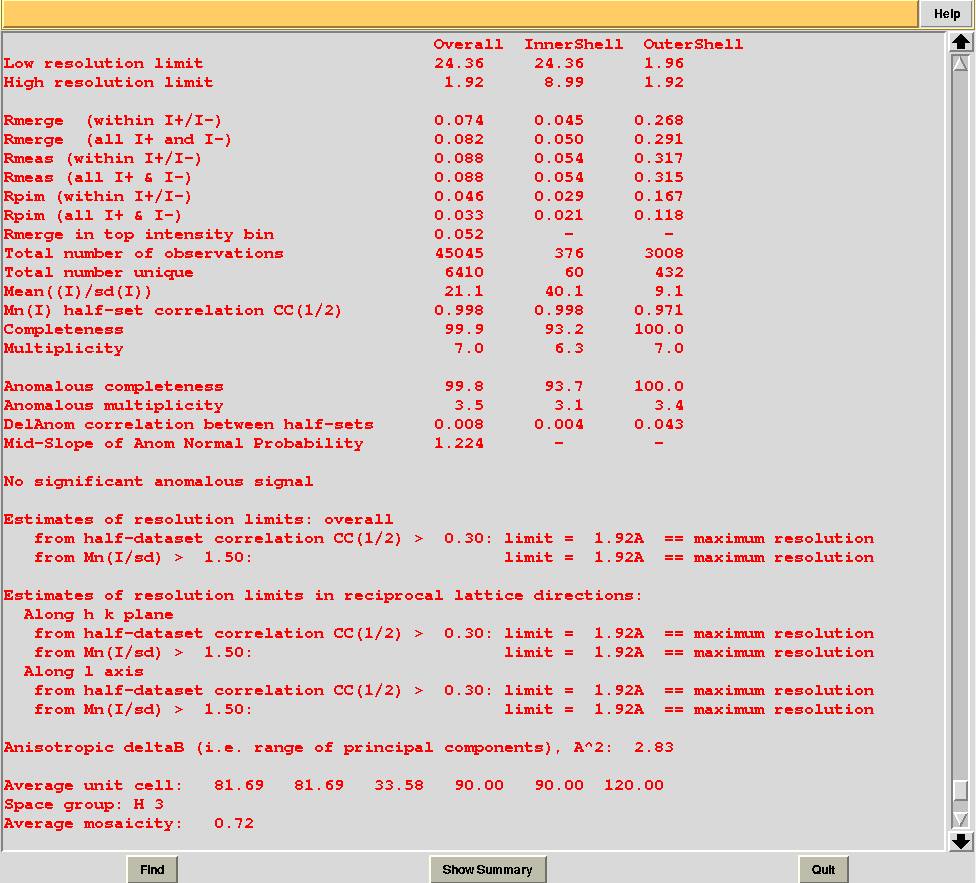
Overall merging statistics can also be explored selecting "View Files from Job" → "View Job Results (new style)":
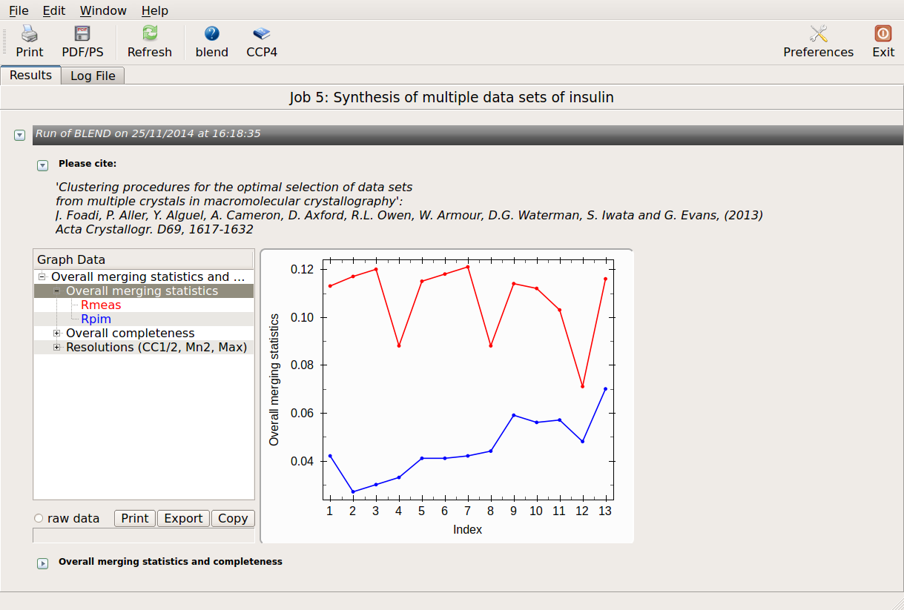
There might be reasons for which the user wishes to calculate results for certain nodes only, rather than for all nodes of the dendrogram. This can be done using two numerical values, rather than one, in BLEND synthesis. Suppose we only want to calculate data for cluster (5 6 8 10). This cluster merges at a height of 0.744 (check “CLUSTERS.txt”). Two numerical values in between which 0.744 and no other nodes is included are 0.745 and 0.743. Thus, to produce a synthesis just for this cluster, one can run BLEND as follows:
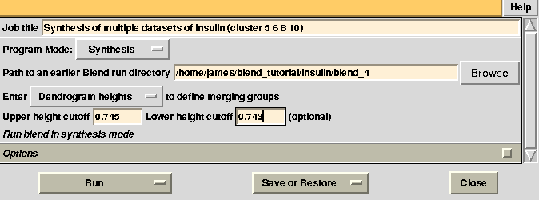
Statistics and related files for only one data set are contained within the “merged_files” directory. Suppose we want to extend resolution of the previous result from 1.93 to 1.80. BLEND can be again executed in synthesis mode using the appropriate "RESOLUTION" keyword:
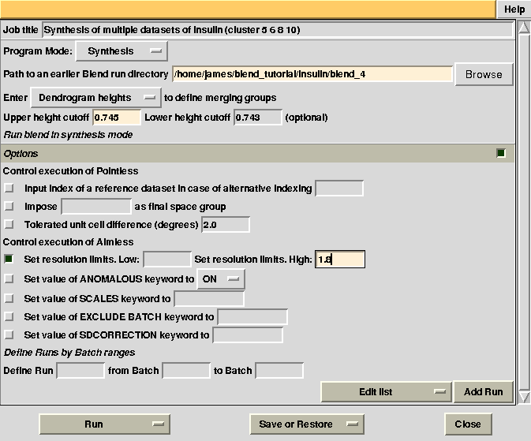
Check statistics under the new “merged_files” directory, they should have changed to include the desired resolution cutoff. "MERGING_STATISTICS.info" allows people to gain a better understanding of the ability individual data sets have to form larger, more complete and isomorphous groups. For example, in job number 5, it clearly emerges that cluster 5, composed of data sets 7, 9, 13, has good merging statistics and it is very complete. The two additional data sets joining 7, 9, 13 and forming cluster 10, i.e. data sets 11 and 12, make the situation worse, because scaling with AIMLESS fails (results given as "NA"). In cases like this it is useful to re-run BLEND using specific keywords, only for that specific node, using BLEND in combination mode. The "NA" for cluster 10 can be investigated by looking at the AIMLESS log inside the "merged_files_all" directory (file "aimless_010.log"):
AIMLESS stopped abruptly while trying to compute standard errors (SD). This is, at present, a potentially frequent occurrence in AIMLESS, whenever combinations from multiple data sets are involved. Most of the time it is caused by the failed refinement of standard errors. A possible way out is through the addition of a same set of SD parameters for all data sets (SDCORR SAME). Alternatively, it is possible to give up with SD refinement (thus having poor errors estimate) altogether (SDCORR NOREFINE). Let's re-run BLEND using keyword SDCORR SAME:
Now time BLEND returns a scaled data set with valid merging statistics (Rmeas = 0.119, Rpim = 0.042). The result can be found in the newly-created directory "combined_files". This directory can be progressively populated with many different combinations. Data sets and merging statistics for other failed BLEND synthesis jobs can be attempted in a similar way (try yourself clusters 6 and 13).
Running BLEND in combination mode it is also possible to compute merging statistics for groups of data sets not corresponding to any cluster. Thus, for example, we might want to investigate whether data set 11 or data set 12 make statistics for cluster 5 worse. First we try with 11 (remember to use always the keyword line SDCORR SAME). In order to have results from this run included in the same "combined_files" directory from a previous run in combination mode, we will have to select that specific directory in the GUI:
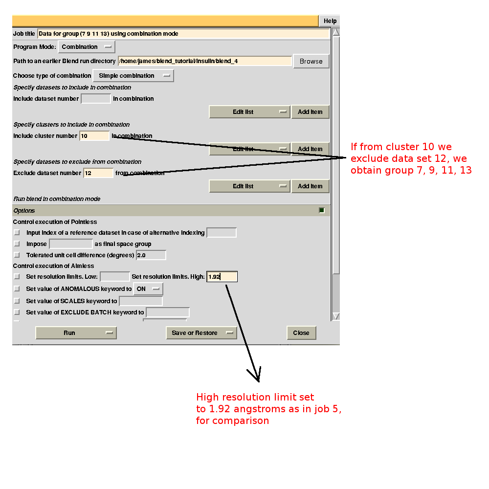
Next we try with 12 (don't forget to use "blend_9" as path to earlier BLEND directory). After these last two runs, the population for the last "combined_files" directory include files for three groups:
Checking file "MERGING_STATISTICS.info" leads to the conclusion that statistics are better with data set 11. Thus we can decide to "filter out" data set 12 from cluster 10, in order to achieve a better composite data set. Results can also be viewed using the "new style" interface:
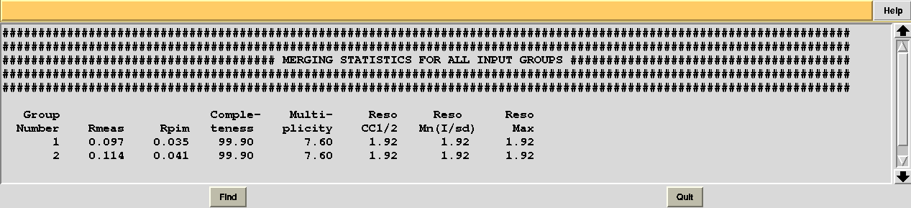
b) Without CCP4I
Like any other CCP4 program, BLEND can be executed without using ccp4i, simply typing commands at the keyboard in an interactive command shell. This, quite often, makes the program more flexible. Here we will briefly repeat all steps previously carried out with ccp4i. First a new directory, named for example "insulin_no_ccp4i" will be created in order to keep this part of the tutorial separate from the rest:
mkdir insulin_no_ccp4
cd insulin_no_ccp4
Next we run BLEND in analysis mode using all 14 files in the "data/insulin" directory:
blend -a ../data/insulin
After start the program immediately halts, waiting for keywords input; in this specific instance we simply push the "Enter" key once, thus forcing BLEND to use default values. At completion the program produces the following files:
BLEND.RData
BLEND_SUMMARY.txt
CLUSTERS.txt
FINAL_list_of_files.dat
mtz_names.dat
tree.png
tree.ps
whose meaning and content has been previously explained. To show how "mtz_names.dat" can be re-used for a different run of BLEND in analysis mode, and similarly to what done previously in this tutorial, let's create a directory called "amended_insulin" and copy "mtz_names.dat" in it:
mkdir amended_insulin
cd amended_insulin
cp ../mtz_names.dat original.dat
Then "original.dat" is edited to remove the last four lines, thus creating a different input, consisting only of 10 out of 14 data sets. Next, the program is executed using "original.dat" as input:
blend -a original.dat
Results of this run are similar to what described before. To carry on let's move back one level to "insulin_no_ccp4i":
cd ../
If a log file is needed, then a keyword file has to be prepared before execution. Let's call this file "blend_keywords.dat", and play both with RADFRAC and ISIGI keywords, changing from their default values 0.75 and 1.5 to the new values 0.65 and 3.0. We can also add the "SDCORR SAME" keyword so to avoid some scaling jobs to fail (see earlier parts of this tutorial). The file looks like this:
RADFRAC 0.65
ISIGI 3.0
SDCORR SAME
Then BLEND is executed again using "mtz_names.dat" as input:
blend -a mtz_names.dat < blend_keywords.dat > blend_analysis.log
After completion, "blend_analysis.log" can be either read using any editor, or viewed graphically with the CCP4 program "logview":
logview blend_analysis.log
To run BLEND in synthesis mode and produce scaled data for all nodes of the dendrogram, type:
blend -s 14 < blend_keywords.dat > blend_synthesis.log
At completion the result can, again, be viewed using "logview":
logview blend_synthesis.log
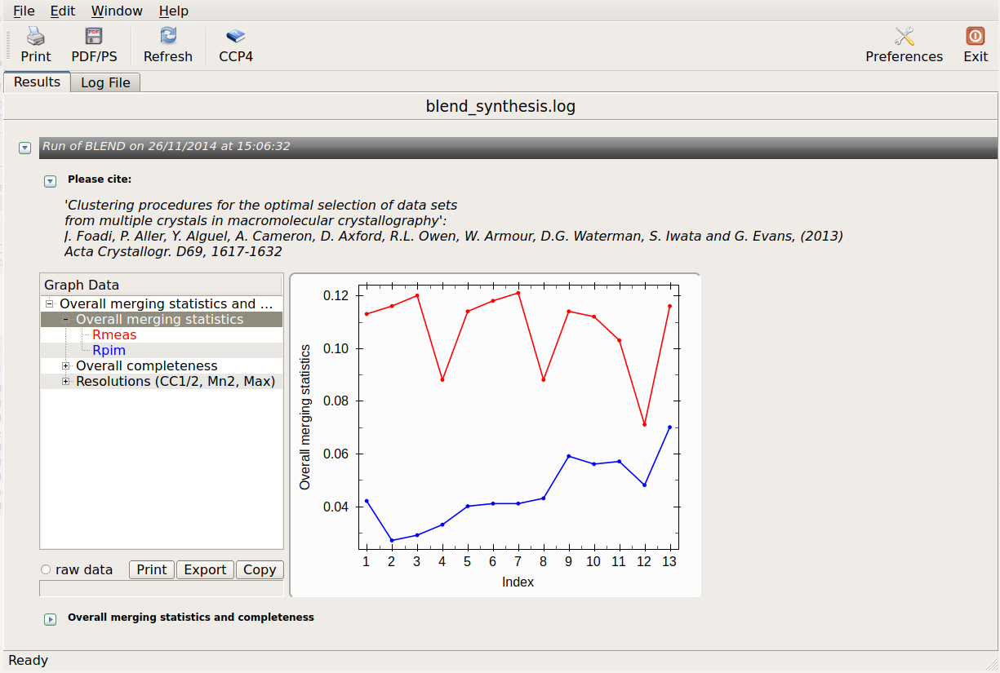
All unscaled and scaled mtz files, and all POINTLESS and AIMLESS logs, are contained in the "merged_files" directory. Logs can be viewed using "logview" or "loggraph". For example:
loggraph merged_files/aimless_005.log
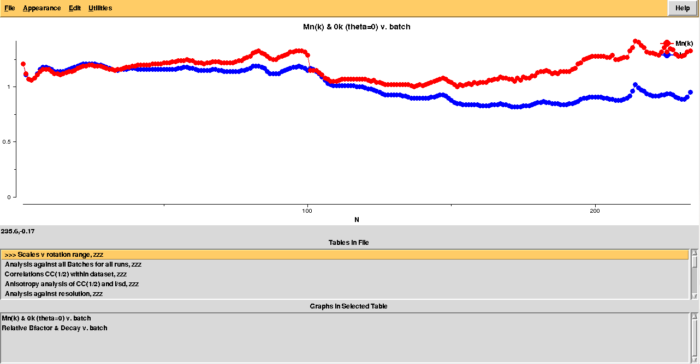
In order to execute BLEND in combination mode, so to scale groups of data sets not corresponding to any cluster, it is handy to copy and paste numeric strings from "CLUSTERS.txt":
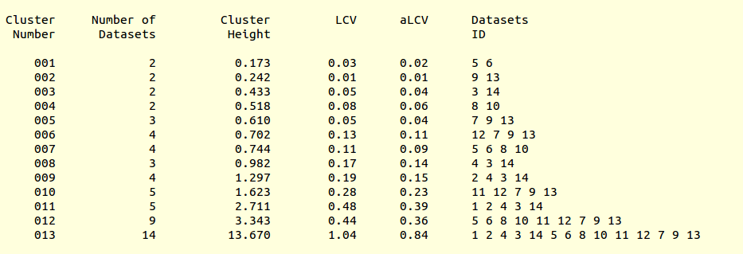
For instance, string "7 9 13" from cluster 6 and string "8 10" from cluster 4 can be both copied, pasted and joined into a new string (one needs to have good reasons for doing it!):
blend -c 7 9 13 8 10 < blend_keywords.dat
Next, we can try combination "4 3 14" + "5 6", and combination "3 14" + "7 9 13":
blend -c 4 3 14 5 6 < blend_keywords.dat
blend -c 3 14 7 9 13 < blend_keywords.dat > blend_combination.log
All files produced will be contained in directory "combined_files". The final log file includes whatever is contained in "combined_files":
logview blend_combination.log
How to obtain complete data sets, while preserving isomorphism with BLEND
These data come from hen egg lysozyme with two different procedures. The first group of 12 10-degree sweeps has been collected with pure lysozyme crystals at room temperature from crystallisation plates. The second group of 16 10-degree sweeps has been obtained from crystals soaked in a solution of sodium bromide; data have been collected at the Diamond Light Source synchrotron with a wavelength close to the bromide peak. Data collection went further than 10 degrees for each data set, but we have limited sweeps in order to replicate similar situations met when radiation damage acts fast. For this tutorial in situ data have been stacked with data collected at low temperature and from a slightly different structure (additional bromide content) in order to demonstrate the interplay between completeness and non-isomorphism.
Let's create a new directory, called "lysozyme", in the "blend_tutorial" directory, and associate the new project directory "BLEND_TUTORIAL_LYSOZYME" to "lysozyme":
mkdir lysozyme_test
Next, we run BLEND in analysis mode using all mtz files in "data/lysozyme":
In the group of files produced by this run the following dendrogram (file "tree.ps" or "tree.png") is found:
The overall Linear Cell Variation (LCV) has a high value. This is certainly caused by the couple of crystals in the isolated branch on the left of the dendrogram, as it can be confirmed by looking at cell parameters plots in BLEND log file (new style):
Data consist of many short sweeps (not useful to form a complete data set), therefore we can get rid of sweeps 19 and 21 without loosing much data and re-run BLEND in analysis mode. One way of executing BLEND using the same data without sweeps 19 and 21 is by renaming file "mtz_names.dat" as "original.dat" and deleting the lines pointing to these sweeps:
mv lysozyme/blend_1/mtz_names.dat lysozyme/original.dat
[edit "lysozyme/original.dat" and delete lines containing "dataset_019.mtz" and "dataset_021.mtz"]
BLEND is now executed using "original.dat" as input:
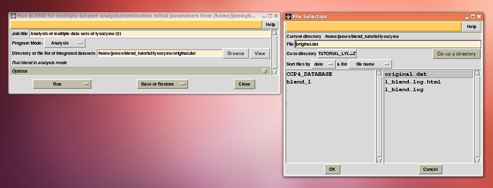
The ensuing dendrogram is:
As we can see, the new LCV is much smaller, although the value 1.68% (and the absolute LCV value 1.54 Å) still indicates some non-isomorphism among all crystals. We know this is the case because crystals have been assembled from differently-prepared structures. Indeed, LCV values computed separately for the left branch and for the right branch of the dendrogram return 0.69% and 0.72%, respectively. Incidentally, data sets group 1 – 12 has different features from group 13 – 26 (remember, two sweeps missing from the initial group!) because it corresponds to a different collection from a different group of crystals. This coarse division, observed in the two separate dendrogram's branches, can also be hinted by looking at the different mosaicity trends in BLEND log file:
Scaled data for all nodes of the new dendrogram can be computed running BLEND in synthesis mode. We know that all data should belong to space group P 43 21 2. We also would like to use the same resolution for all data, say 1.9 Å. Accordingly, the program is executed using the following keywords:
CHOOSE SPACEGROUP P 43 21 2
TOLERANCE 100
RESO HIGH 1.9
Keyword TOLERANCE is set to a high value to bypass the default tendency of POINTLESS to stop execution when cell parameters differ too much. Considering now the dendrogram, using only one value for the height means that the program would process all nodes below this value. In the "CLUSTERS.txt" file it can be seen that these have values smaller or equal to 28.861; thus any value larger than this produces the desired scaled data:
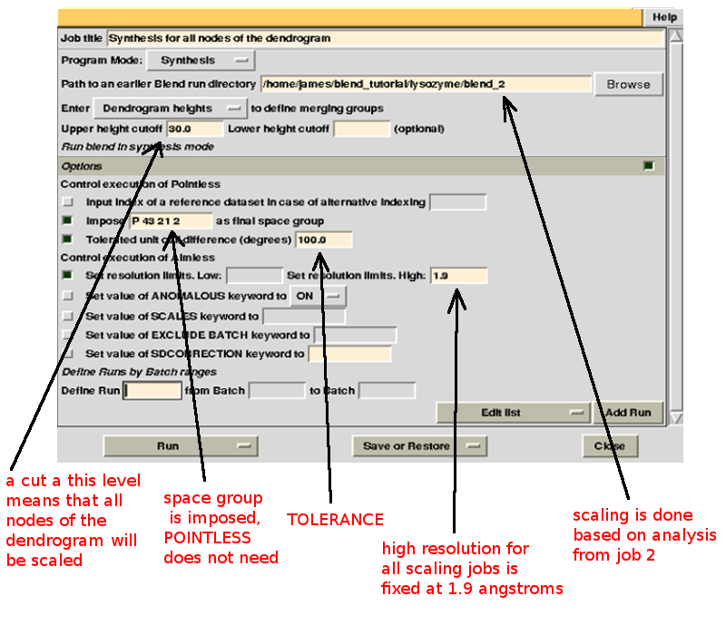
This run will take a while to complete (many clusters!). At the end of execution a new "merged_files" directory is created with scaled files and merging statistics tabulated. Here is a view of the final statistics in BLEND log:
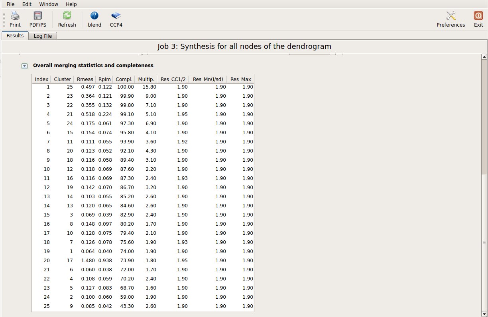
Scaled files corresponding to these results are included in the "merged_files" directory, and they are ready for further investigations. Some of the statistics can be improved by filtering out certain sweeps from specific clusters. A visualization of the above table is provided in the following picture, where clusters with completeness around 90% or better are represented by grey circles and the corresponding Rmeas value is typed underneath:
Clusters 21, 22, 23 and 25 have clearly unacceptable Rmeas values, while values for clusters 15 and 24 can, possibly, be improved. The main way to improve statistics at this point is by running BLEND in combination mode. Let's try, for instance, to improve the statistics for cluster 15. As the Rmeas value jumps from 0.111 for cluster 11 to 0.155 for cluster 15 and as cluster 15 is simply cluster 11 with the addition of sweep 23, it is straightforward to impute the reason for the increase to the bad quality of sweep 23. But there might also be other possibilities. For example sweep 23 does not match well some of the sweeps composing cluster 11; by excluding these sweeps, then, statistics might improve. In conclusion we can try and couple sweep 23 with cluster 11, excluding in turn one of the sweeps forming cluster 11. For all combinations after the first we will have to make sure that the path to an earlier BLEND directory points to the results directory of the previous combination. So for the first combination:
For the second combination:
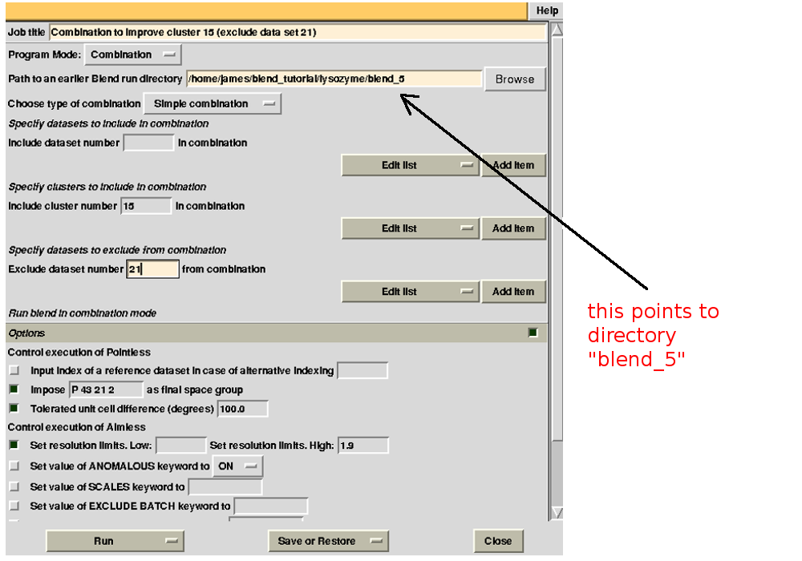
To summarize, for all combinations tried to improve statistics for cluster 15, we have:
combination 23 25 24 26 18 points to directory “lysozyme/blend_2”
combination 23 25 24 26 21 points to directory “lysozyme/blend_4”
combination 23 25 24 18 21 points to directory “lysozyme/blend_5”
combination 23 25 26 18 21 points to directory “lysozyme/blend_6”
combination 23 24 26 18 21 points to directory “lysozyme/blend_7”
Final statistics can be viewed in the "MERGED_STATISTICS.info" file under "lysozyme/blend_8/combined_files" or simply using the interface:
The lowest Rmeas is the one for group 2. Thus, discarding sweep 18 from cluster 15 causes Rmeas to improve from 0.155 to 0.135, while completeness decrease just of a little from 95.8% to 94.6%. Similar combinations can be tried on all other clusters. Results are shown in the following picture:
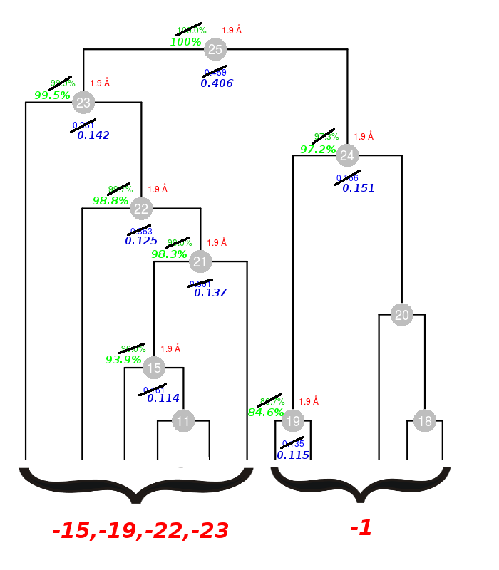
Values shown in red correspond to those cases where filtering out one or more sweeps has made it possible to lower Rmeas.
Try to reproduce the same results by executing BLEND in combination mode. As a hint you can find it useful to know that the sweeps discarded are 11, 15, 18 and 22. To conclude this tutorial, use BLEND in combination mode with just one element at a time to reproduce scaled data and statistics for individual sweeps. It is interesting to observe that the 4 data sets excluded from the previous filtering job do not always correspond to those having worst Rmeas values.
A final remark: all scaled mtz files do not contain structure factors, but only scaled intensities. To create structure factors and proceed with phasing, model building and refinement, you need to run the CCP4 program TRUNCATE or any other software that does an equivalent job.
Easy SAD phasing with multiple crystals
Each one of these data sets is not complete. The anomalous signal produced by the heavy bromine atoms can be detected
even with partial data sets, but effective phasing can only happen reliably with good anomalous completeness. For this
reason it is necessary to merge data from these multiple crystals to obtain full anomalous completeness. The resulting
high redundancy makes the anomalous signal even stronger, provided isomorphism is conserved.
In this tutorial we will use BLEND to first explore resolution and completeness of data and then to obtain complete
data sets that will be subsequently used to find the heavy atom substructure. The CCP4 GUI will not be used, so that the
whole tutorial is simplified, but the GUi should be used if you are unfamiliar with command line execution.
First let us create a new directory, called "lysBr" inside the "blend_tutorial" directory:
mkdir lysBr
Data in this case are stored in directory "lysBr" under "blend_tutorial/data". But they are spread over 12 different directories. In order to prepare data for BLEND we have two options; either copy all data into a single directory, or edit a file with paths for all 12 input files. In this case the second option is better because all individual input files have been produced by XDS and have identical name, "INTEGRATE.HKL". A quick way to prepare the input file for BLEND is to use the unix command "find". First let us move inside the "lysBr" directory (our working directory, in this case):
cd lysBr
mkdir lysBr
Next, use "find" starting from "data/lysBr" directory and re-direct the results into a new file called "original.dat". This file is the initial input for BLEND (the "sort" command after the pipe symbol "|" is to sort directory names; it's not needed in general, as input file order really does not matter in BLEND, but here it helps the tutorial description):
find ../data/lysBr -name "INTEGRATE.HKL" | sort > original.dat
The contents of "original.dat" should look like the following:
../data/lysBr/xtl001/INTEGRATE.HKL
../data/lysBr/xtl002/INTEGRATE.HKL
../data/lysBr/xtl003/INTEGRATE.HKL
../data/lysBr/xtl004/INTEGRATE.HKL
../data/lysBr/xtl005/INTEGRATE.HKL
../data/lysBr/xtl006/INTEGRATE.HKL
../data/lysBr/xtl009/INTEGRATE.HKL
../data/lysBr/xtl011/INTEGRATE.HKL
../data/lysBr/xtl012/INTEGRATE.HKL
../data/lysBr/xtl015/INTEGRATE.HKL
../data/lysBr/xtl016/INTEGRATE.HKL
../data/lysBr/xtl017/INTEGRATE.HKL
BLEND can now be executed in analysis mode using "original.dat" as input (remember to hit the "enter" key twice, as we hav not prepared any keywords file):
blend -a original.dat
The tree produced should look like the following:
The linear cell variation for all crystals has a small 0.69% value, which means all crystals are fairly isomorphous. Among all files produced by BLEND in the present working directory the new "xds_files" directory and "xds_lookup_table.txt" file have been produced. This happens every time input data come from XDS integration files. BLEND makes use of POINTLESS to turn them into mtz files. All new files, including POINTLESS log files, are included in the "xds_files" directory. The "xds_lookup_table.txt" helps users to keep track of file origin, because all XDS files are re-named in the process. In this specific case, for example, directory "xds_files" includes the following files:
dataset_001.mtz
dataset_002.mtz
dataset_003.mtz
dataset_004.mtz
dataset_005.mtz
dataset_006.mtz
dataset_007.mtz
dataset_008.mtz
dataset_009.mtz
dataset_010.mtz
dataset_011.mtz
dataset_012.mtz
pointless_001.log
pointless_002.log
pointless_003.log
pointless_004.log
pointless_005.log
pointless_006.log
pointless_007.log
pointless_008.log
pointless_009.log
pointless_010.log
pointless_011.log
pointless_012.log
The associated "xds_lookup_table.txt" looks like the following:
dataset_001.mtz /home/james/safe-test/workBLEND/blend_tutorial/data/lysBr/xtl001/INTEGRATE.HKL
dataset_002.mtz /home/james/safe-test/workBLEND/blend_tutorial/data/lysBr/xtl002/INTEGRATE.HKL
dataset_003.mtz /home/james/safe-test/workBLEND/blend_tutorial/data/lysBr/xtl003/INTEGRATE.HKL
dataset_004.mtz /home/james/safe-test/workBLEND/blend_tutorial/data/lysBr/xtl004/INTEGRATE.HKL
dataset_005.mtz /home/james/safe-test/workBLEND/blend_tutorial/data/lysBr/xtl005/INTEGRATE.HKL
dataset_006.mtz /home/james/safe-test/workBLEND/blend_tutorial/data/lysBr/xtl006/INTEGRATE.HKL
dataset_007.mtz /home/james/safe-test/workBLEND/blend_tutorial/data/lysBr/xtl009/INTEGRATE.HKL
dataset_008.mtz /home/james/safe-test/workBLEND/blend_tutorial/data/lysBr/xtl011/INTEGRATE.HKL
dataset_009.mtz /home/james/safe-test/workBLEND/blend_tutorial/data/lysBr/xtl012/INTEGRATE.HKL
dataset_010.mtz /home/james/safe-test/workBLEND/blend_tutorial/data/lysBr/xtl015/INTEGRATE.HKL
dataset_011.mtz /home/james/safe-test/workBLEND/blend_tutorial/data/lysBr/xtl016/INTEGRATE.HKL
dataset_012.mtz /home/james/safe-test/workBLEND/blend_tutorial/data/lysBr/xtl017/INTEGRATE.HKL
In order to estimate data resolutions we can run BLEND in combination mode on each individual data set. Strictly speaking this is not needed, and merged data corresponding to all clusters can be calculated straight away, but exploring individual data sets (in those instances where data wedges and symmetry allow scaling) can help to figure out data quality. We know that the space group for these samples of lysozyme is P 43 21 2 and can fix this in the keywords file. Thus, a new file, named "bkeywords.dat" can be edited to include the following line:
CHOOSE SPACEGROUP P43212
Next, BLEND is executed in combination mode on all 12 data sets:
blend -c 1 < bkeywords.dat
blend -c 2 < bkeywords.dat
blend -c 3 < bkeywords.dat
blend -c 4 < bkeywords.dat
blend -c 5 < bkeywords.dat
blend -c 6 < bkeywords.dat
blend -c 7 < bkeywords.dat
blend -c 8 < bkeywords.dat
blend -c 9 < bkeywords.dat
blend -c 10 < bkeywords.dat
blend -c 11 < bkeywords.dat
blend -c 12 < bkeywords.dat
All files produced by these 12 runs of BLEND are contained in a directory called "combined_files". Let us rename this directory as "individual_files" because it includes process data from individual data sets:
mv combined_files individual_files
File "MERGING_STATISTICS.info" inside "individual_files" is a summary of overall statistics:
Group
Comple-
Multi-
Reso
Reso
Reso
Number
Rmeas
Rpim
teness
plicity
CC1/2
Mn(I/sd)
Max
1 0.066 0.043 58.00 1.50 1.47 1.47 1.47
2 0.071 0.040 55.50 2.50 1.40 1.40 1.40
3 0.292 0.112 92.60 5.40 1.74 1.83 1.43
4 0.084 0.047 67.80 2.20 1.51 1.54 1.50
5 0.067 0.044 71.40 1.50 1.39 1.42 1.39
6 0.211 0.132 84.10 2.00 1.76 1.94 1.52
7 0.193 0.117 70.50 2.10 1.57 1.68 1.50
8 0.050 0.032 52.40 1.80 1.48 1.50 1.48
9 0.127 0.087 72.40 1.50 1.49 1.51 1.49
10 0.548 0.381 66.00 1.40 1.89 2.11 1.49
11 0.083 0.054 60.00 1.70 1.40 1.40 1.40
12 0.075 0.045 71.30 2.10 1.39 1.39 1.39
From the "Completeness" column we can see that the only complete data set is data set 3. Its resolution, as suggested by the "Reso CC1/2" and "Reso Mn(I/sd)" columns is around 1.8 Å. Resolutions are higher for the other partial data sets and it seems reasonable to push resolution for combined data at 1.6 Å. Let us, therefore, run BLEND in synthesis mode to produce merged data for all nodes of the dendrogram at this resolution. The corresponding line to add to the BLEND keywords file is "RESO HIGH 1.6". We also want to turn anomalous handling of data on in AIMLESS, as we would like to used scaled data for subsequent phasing. In the end, the updated "bkeywords.dat" looks like this:
CHOOSE SPACEGROUP P43212
RESO HIGH 1.6
ANOMALOUS ON
Then we execute BLEND as follows (the value 10 is high enough in the dendrogram to include all nodes):
blend -s 10 < bkeywords.dat
All results are, this time, dumped in directory "merged_files". We can appreciate overall statistics by viewing the "MERGING_STATISTICS.info" file inside this directory. These statistics, though, give no information we can use to judge the quality of data for phasing. This information is still not extracted and organised by BLEND because the whole issue is currently under investigations. Future addition in "MERGING_STATISTICS.info" will include such information. For now we can extract specific lines from all AIMLESS logs using the unix "grep" command. For instance, an important piece of information needed to judge the quality of anomalous data is the anomalous completeness. We can extract such information with the following unix line:
grep "Anomalous completeness " merged_files/aimless*.log
The output produced is the following:
It is immediately seen that clusters with satisfactory anomalous completeness are 5, 6, 7, 9, 10, 11 (greater than 90%). These are data sets on which we can try the procedure to find heavy atoms substructure. These files will have to be compared with the only individual data set with the highest anomalous completeness, data set 3. A "grep" line similar to the one previously used can show this:
grep "Anomalous completeness " individual_files/aimless*.log
Resulting output:
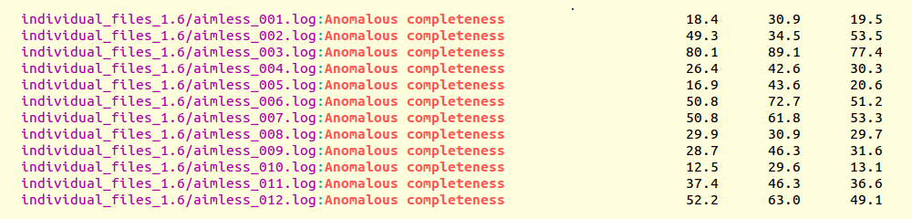
The value of 76.8% for the anomalous completeness of data set 3 is nowhere near an acceptable 90%, but it's the only decent one
obtainable with indvidual data sets, and it is with this one that all merged ones will have to be compared. The message
to be taken home is that when only partial data are available it is still possible to combine them and obtain a complete data set,
rather than wait for new crystals and another data collection. Furthermore, the redundancy implied by merging data together can
increase the anomalous signal and, thus, strengthen the phasing power.
In what follows we have used the SHELX family of programs to prepare data, measure anomalous signal and find the heavy
atoms substructure (Sheldrick (2010)). These programs work with input files of a specific format ("sca" files).
In order to prepare these files we need, first, to turn scaled intensities into structure factors using the CCP4 program TRUNCATE.
Then we use "MTZ2SCA" to turn mtz files into sca files. Everything will be executed inside a new directory called
"anoproc". In this directory we need to create seven more directories, one for each data set to be processed. The whole series of
unix commands to be typed is:
mkdir anoproc
cd anoproc
mkdir lysBr_ind_003
mkdir lysBr_005
mkdir lysBr_006
mkdir lysBr_007
mkdir lysBr_009
mkdir lysBr_010
mkdir lysBr_011
The procedure to produce sca files ready to be used in SHELX will be now shown only for one of the data sets involved, data set 6, but it is meant to be repeated in exactly the same way for all other data sets. First we move to directory "lysBr_006". Then we run TRUNCATE, using command lines, in the following way:
cd lysBr_006
truncate HKLIN ../../merged_files/scaled_006.mtz HKLOUT truncate_006.mtz
After having entered this line execution halts as TRUNCATE expects some keywords. We can use default values and just type "END" (and hit the "Enter" key). After execution a file "truncate_006.mtz" should appear in the directory. To translate this file into a sca file we use MTZ2SCA in a very simple way:
mtz2sca truncate_006.mtz
Now also "truncate_006.sca" should be present in the directory. As mentioned before, the procedure just applied on data set 6 should be repeated for the other 6 data sets in the "anoproc" directory. Once all sca files have been obtained, programs SHELXC and SHELXD can be executed to obtain the heavy atoms substructure. The heavy atom for this specific case is bromine (BR - 8 sites) and we have tried 1000 trials in SHELXD. Results are tabulated as follows:
| Data set | Sufficient d"/sig ? | Solution ? | CCall | CCweak | Cfom |
| ind_003 | yes (?) | yes | 30.37 | 15.47 | 45.85 |
| 005 | yes | yes | 43.64 | 26.23 | 69.87 |
| 006 | yes | yes | 37.24 | 22.07 | 59.31 |
| 007 | yes | yes | 43.05 | 25.97 | 69.02 |
| 009 | yes | yes | 34.96 | 18.59 | 53.54 |
| 010 | yes | yes | 44.68 | 27.25 | 71.92 |
| 011 | yes | yes | 42.59 | 25.57 | 68.16 |
The phasing power of bromine in a stable structure like lysozyme is clear from the relatively high CCall (> 30) for data set "ind_003". It is also clear, though, that the anomalous signal becomes much more effective when multiple isomorphous crystals are merged together.
(2010) G. M. Sheldrick, "Experimental phasing with SHELXC/D/E: combining chain tracing with density modification", Acta Cryst. D66, 479-485
(2011) Q. Liu, Z. Zhang and W.A. Hendrickson, "Multi-crystal anomalous diffraction for low-resolution macromolecular phasing", Acta Cryst. D67, 45-49
(2012) R. Giordano, R.M.F. Leal, G.P. Bourenkov, S. McSweeney and A.N. Popov, “The application of hierarchical cluster analysis to the selection of isomorphous crystals", Acta Cryst. D68, 649-658
(2012) D. Axford, R.L. Owen, J. Aishima, J. Foadi, A.W. Morgan, J.I. Robinson, J.E. Nettleship, R.J. Owens, I. Moraes, E.E. Fry, J.M. Grimes, K. Harlos, A. Kotecha, J. Ren, G. Sutton, T.S. Walter, D.I. Stuart and G. Evans, "In situ macromolecular crystallography using microbeams", Acta Cryst. D68, 592-600
(2012) M.A. Hanson, C.B. Roth, E. Jo, M.T. Griffith, F.L. Scott, G. Reinhart, H. Desale, B. Clemons, S.M. Cahalan, S.C. Schuerer, M.G. Sanna, G.W. Han, P. Kuhn, H. Rosen, R.C. Stevens, "Crystal structure of a lipid G protein-coupled receptor"
(2013) J. Foadi, P. Aller, Y. Alguel, A. Cameron, D. Axford, R.L. Owen, W. Armour, D.G. Waterman, S. Iwata and G. Evans, "Clustering procedures for the optimal selection of data sets from multiple crystals in macromolecular crystallography", Acta Cryst. D69, 1617-1632, Science 335, 851-855